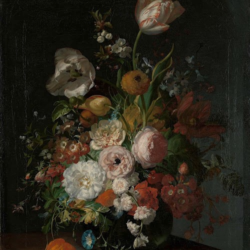

RIJKS MUSEUM
Home
Bezoek het rijksmuseum
CLARA EN ONDERKRUIP
Van gruwelen tot verwonderen
RIJKS
CLARA EN ONDERKRUIP
Van gruwelen tot verwonderen
CLARA EN ONDERKRUIP
Van gruwelen tot verwonderen
CLARA EN ONDERKRUIP

Van gruwelen tot verwonderen
Boek je bezoek | RIJKSMUSEUM
Kies jouw favo schilderij
Blue
Red
Aanmelden voor het RIJKSMUSEUM
Type jouw mailadres